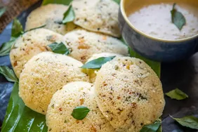

Idli

Description
Idli is a staple breakfast dish from South India, known for its soft, fluffy texture and mild flavor. Made from fermented rice and lentil batter, this steamed dish is light, nutritious, and perfect for all ages. It's traditionally served with coconut chutney, sambar, and a touch of spicy podi (powder).
Ingredients
- 2 cups of rice
- 1 cup of urad dal (split black gram)
- 1 teaspoon of fenugreek seeds
- Water (as needed)
- Salt to taste
Steps
- Wash and soak the rice and urad dal (with fenugreek seeds) separately for 4-6 hours.
- Grind the soaked ingredients into a smooth batter, adding water as needed.
- Combine the batters, add salt, and let it ferment overnight.
- Pour the batter into idli molds and steam for 10-12 minutes.
- Serve hot with chutney and sambar.